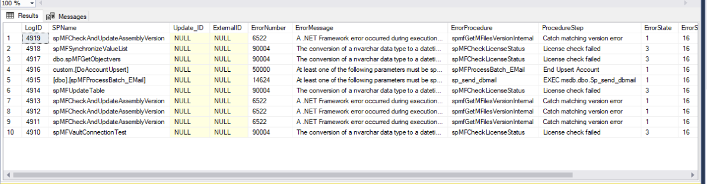
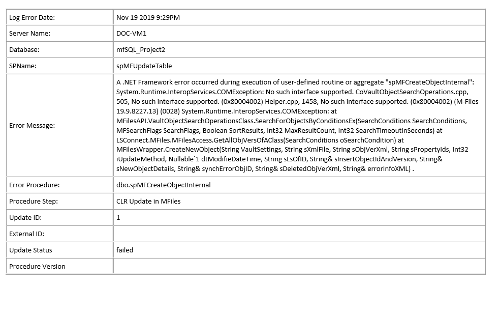
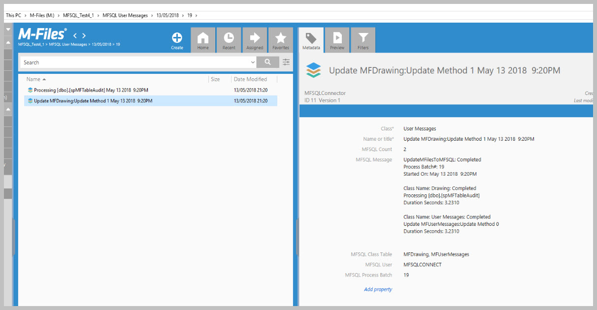
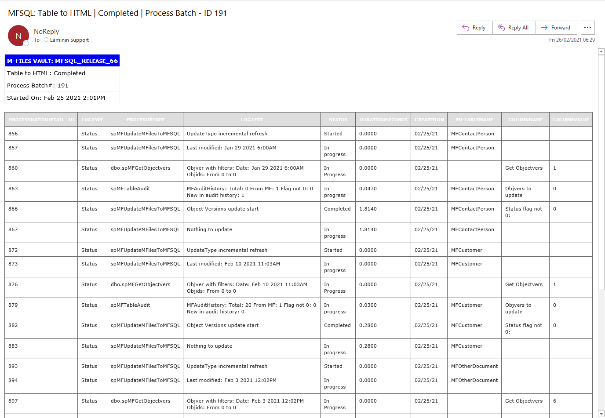

User Messages¶
User messages can be generated in a variety of different ways, depending on the type of message and user requirements.
The following types of messages can be used:
Access error message in MFLog
Get error messages to email
Access process logging
Adding a process message to an individual object
Get process messages in M-Files
Add custom message in the MFUserMessage table
Show process results in context menu action
Process custom messages by email
Each of these types of messages requires a configuration and setup
Examples and setup of messaging¶
Access error message in MFLog¶
System failure messages are logged in the MFLog table and automatically sent by email to the support email address specified in MFSettings. The notification is conditional on database mail being setup in the system.
Select top 10 * from MFLog order by logid desc

Get error messages to email¶
Step 1: Install and setup databasemail on the server. Note the default mailprofile is set to ‘MailProfile’, however this can be changed. Step 2: Update MFSettings with mail profile and email address of recipients, separated by ‘;’.
exec spMFSettingsForDBUpdate @SupportEmailAccount = 'support@lamininsolutions.com', @EmailProfile = 'MailProfile'
On each MFSQL SQL Error a message will be sent to the email address.

Access process logging¶
Logging of a range of different events takes place in the background. Refer to Using and managing logs for more detail
Adding a process message to an individual object¶
In some use cases it is desireable to provide feedback on the meatacard of an object for the Connector process. A good example is where an object is changed by a background process and a specific object is updated.
Two properties is automatically added to the vault on installation:
MFSQL Message
MFSQL Process Batch
These properties are not automatically added when class table is created. They can either manually be added to the metadata card or added in SQL to the class table
ALTER TABLE dbo.MFCustomer
ADD mfsql_Message NVARCHAR(4000), mfsql_Process_batch INT
All that is remaining is to update these properties to every custom procedure to set an appropriate message for MFSQL_Message and add the processbatch_id to MFSQL_process_batch to reference back to the specific process that updated the object.
Adding values to these properties are illustated by the example procedure 90.105.custom.DoCMAsyncAction

Get standard process messages in M-Files¶
Core process messages are send to the MFUserMessages table and shown in M-Files in the User Messages View. Showing the messages in M-Files is dependent on configuration settings.
The installation of the content package installs the following objects related the user messages:
the User Message Class table with properties
a view for the user messages
Messages workflow to archive the user messages.
This table contains messages emanating from the MFProcessBatch Table intended for user consumption.
The following core processes will generate a message for the MFUserMessages table.
spMFUpdateTable
spMFAliasInsert
spMFCreateAllLookups
spMFDeleteAdHocProperty
spMFDeleteObjectList
spMFDropAndUpdateMetadata
spMFGetHistory
spMFSynchronizeFilesToMFiles
spMFSynchronizeMetadata
spMFTableAudit
spMFUpdateMFilestoSQL
By default the Connector will not insert user messages. To enable user messages in the MFUserMessage table the MFSettings table must be updated.
EXEC dbo.spMFSettingsForDBUpdate @UserMessageEnabled = '1'
Example of process message in M-Files 
The messages can be access with the User Messages view that is automatically added.
Add custom message in the MFUserMessage table¶
The Connector includes a mechanism to generate and trigger user messages. This is built into the process batch logging When an entry is made in the MFProcessBatch with a LogType of ‘Message’ a trigger will update an entry in the MFUserMessages table using the spMFResultMessageForUI procedure.
Example of script to trigger a message in the MFUserMessage table
SET @Msg = 'Session: ' + CAST(@SessionIDOut AS VARCHAR(5)) IF @UpdateRequired > 0 SET @Msg = @Msg + ' | Update Required: '+ CAST(@UpdateRequired AS VARCHAR(5)); IF @LaterInMF > 0 SET @Msg = @Msg + ' | MF Updates : ' + CAST(@LaterInMF AS VARCHAR(5)); IF @Process_id_1 > 0 SET @Msg = @Msg + ' | SQL Updates : ' + CAST(@Process_id_1 AS VARCHAR(5)); IF @Process_id_1 > 0 SET @Msg = @Msg + ' | SQL New : ' + CAST(@NewSQL AS VARCHAR(5)); Set @logText = @Msg EXEC [dbo].[spMFProcessBatch_Upsert] @ProcessBatch_ID = @ProcessBatch_ID OUTPUT ,@ProcessType = @ProcessType ,@LogType = N'Message' ,@LogText = @LogText ,@LogStatus = @LogStatus ,@debug = @Debug;
Process custom messages by Email¶
custom email messages can be sent as part of the processing of a procedure. This functionality make use of the MFProcessBatch and MFProcessBatchDetail logs. The process batch and process batch detail is generated using spMFProcessBatch_Upsert and spMFProcessBatchDetail_Insert The results in these logs can be processed as a email message with spMFProcessBatch_Email
- There are two types of emails:
- # Summary email
The summary email is based on the Process Batch row entry.

- # Detail email
The detail email is based on the Process Batch Detail of the process batch.
